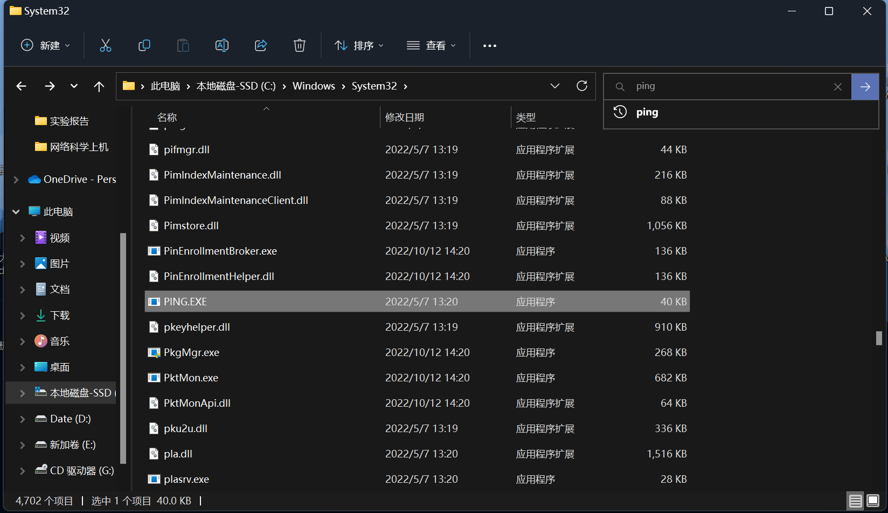
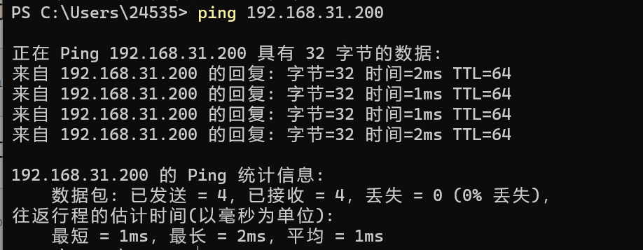

计算机网络大作业——抓包与分析
一、作业目的
- 了解网络通信的分层实现过程，了解不同层次PDU的逐层封装与解封过程；
- 了解数据通信的过程，进一步认知协议的构成与通信过程，进而对TCP/IP分层体系结构有更深刻的了解。
二、作业内容
在局域网范围内从协议层面分析ping命令的执行过程，包括所使用协议，以及不同层级的数据包封装与解封的过程。
访问
www.ujs.edu.cn网站，分析其中所使用的协议，以及数据包的逐层封装与解封过程。思考在数据链路层的数据包与网络层数据包的异同，包括包长度和数据构成等，并进一步思考为何存在这些区别。
四、抓包软件说明
本次作业需要使用到一些特定的抓包软件，如Wireshark、Sniffer等。这些软件可以通过对设备上产生的数据包进行截取，通过分析这些数据包可以详细获取一些我们所做的操作的行为，了解计算机底层通讯的具体过程，甚至通过数据包可以进行分析异常的流量，这些对网络的稳定性与安全性都有着十分重要的意义。
由于个人习惯，我使用的是Wireshark抓包工具。
Wireshark的抓包原理
Wireshark使用的环境大致分为两种，一种是电脑直连互联网的单机环境，另外一种就是应用比较多的互联网环境，也就是连接交换机的情况。
「单机情况」下，Wireshark直接抓取本机网卡的网络流量；「交换机情况」下，Wireshark通过端口镜像、ARP欺骗等方式获取局域网中的网络流量。
端口镜像：利用交换机的接口，将局域网的网络流量转发到指定电脑的网卡上。
ARP欺骗：交换机根据MAC地址转发数据，伪装其他终端的MAC地址，从而获取局域网的网络流量。
Wireshark的快速使用
Wireshark是一款开源软件，可以从其官网上免费下载。其官网地址为：https://www.wireshark.org
安装注意事项
在官网下载安装包后运行安装程序，在安装过程中有几个注意点：
在安装过程中注意安装Npcap这个组件，这个组件是Wireshark在进行网络检测时的重要组件，没有这个组件抓包可能无法进行。

在安装Wireshark时需要选择安装哪些工具，建议全部勾选，大部分较为常用。
安装过程中需要勾选USB驱动，便于日后无法检测其他USB端口以及串口。

在安装完成后，打开软件将看见如下界面：
这里显示了目前我们的机器上面的所有的网卡设备，这里的网卡设备不仅仅只有真正的硬件设备，同时也有电脑中的虚拟网卡。。本地连接是我曾经连接的一下网线连接，由于此时我使用的是WLAN，所有的本地连接目前都是没有网络波动的。我的电脑中安装了VMware，此时有虚拟机在后台运行，所以VMnet8与VMnet1网卡中也存在着网络波动。Adapter for lookback traffic capture是我的机器的环回接口，即127.0.0.1。只有确定了我们抓包需求之后，选择正确的网卡，我们才能得到我们真正想要的数据。
双击需要进行抓包的网卡，屏幕上开始实时显示软件所有的通过网卡的数据流，此时已经开始自动捕获数据流并记录。
在这个界面的左上角可以进行录制进度的控制，随时可以进行暂停、停止、继续等操作，也可以进行一些分组操作等。
基本学会如何去使用Wireshark抓包软件就可以进一步去探索某些具体协议的底层数据链路过程了。
三、具体作业
详细了解ping命令
ping命令的原理
ping命令是一个检测网络间两个IP之间的连通性的工具。他实质是一段程序，存储在计算机的`C:\Windows\System32\PING.EXE`位置。

他可以调用ICMP协议，给指定的一个IP地址发送一个封装好的数据包，如果那个IP存在，再次经过IMCP协议的处理，会返货一个同样大小的数据包会来。如果在一定时间内，本机好没有收到对方IP返回的数据包，则会默认为超时，即为连接不通。
ping命令是一个很好的连通性检测工具，但是也并不是ping命令结果为超时就代表这个指定IP不存在，由IP的底层原理就可以看出，想要ping命令生效，检测的双方必须都支持ICMP协议，如果指定IP的那个一方的防火墙被设定为不支持ICMP协议的，则会拒绝掉所有采用ICMP协议的数据包，我方自然不会收到对方应答的数据包。这种不支持ICMP协议的设备在网络中很多，在我们连接某一个公网IP的时候，我们的请求在网络中走的每一跳，通过`tracert`命令，追踪到每一跳经过的机器的IP地址，`tracert`命令会再次对每一跳到达的IP地址进行ping，由于我们访问的目的IP是存在的，那我们的数据包是经过追踪出的每一个IP转发出去的，这些IP在公网中一定是存在的，但是由于其不支持ICMP协议，显然ping命令不能检测到他们，证明ping命令也具有局限性。
ping命令的执行过程
同一网段
ping通知系统建立一个固定格式的ICMP请求数据包ICMP协议打包这个数据包和机器B的IP地址转交给IP协议层IP层协议将以机器B的IP地址为目的地址，本机IP地址为源地址，加上一些其他的控制信息，构建一个IP数据包获取机器
B的MAC地址
IP层协议通过机器B的IP地址和自己的子网掩码，发现它跟自己属同一网络，就直接在本网络查找这台机器的MAC。
若两台机器之前有过通信，在机器A的ARP缓存表应该有B机IP与其MAC的映射关系；若没有，则发送ARP请求广播，得到机器B的MAC地址，一并交给数据链路层
数据链路层构建一个数据帧，目的地址是IP层传过来的MAC地址，源地址是本机的MAC地址，再附加一些控制信息，依据以太网的介质访问规则，将他们传送出去机器B收到这个数据帧后，先检查目的地址，和本机MAC地址对比
符合，接收。接收后检查该数据帧，将IP数据包从帧中提取出来，交给本机的IP协议层协议。IP层检查后，将有用的信息提取交给ICMP协议，后者处理后，马上构建一个ICMP应答包，发送给主机A，其过程和主机A发送ICMP请求包到主机B类似（这时候主机B已经知道了主机A的MAC地址，不需再发ARP请求）；不符合，丢弃。
不同网段
ping通知系统建立一个固定格式的ICMP请求数据包ICMP协议打包这个数据包和机器B的IP地址转交给IP协议层（一组后台运行的进程，与ICMP类似）IP层协议将以机器B的IP地址为目的地址，本机IP地址为源地址，加上一些其他的控制信息，构建一个IP数据包获取主机
B的MAC地址
IP协议通过计算发现主机B与自己不在同一网段内，就直接交给路由处理，就是将路由的MAC取过来，至于怎么得到路由的MAC地址，和之前一样，先在ARP缓存表中寻找，找不到可以利用广播。路由得到这个数据帧之后，再跟主机B联系，若找不到，就向主机A返回一个超时信息。
ping命令产生的数据包详解
ping命令本身属于应用层，在执行的时候会通过调用网络层TCP/IP协议簇中的ICMP协议，此时首先会产生一个IMCP数据报文，报文的所有内容如如下图所示：
将其中的内容大致分开，可分为两个部分，分别是ICMP首部和ICMP数据
为了进行传输，在网络层中还会再次在ICMP报文前面加上IP首部，首部主要包括双方的IP地址等
这里就完成了网络层的IP数据包的封装
网络层将封装好的IP数据包传输到下一层数据链路层，在这里会进行再次封装，在IP数据包前面加入帧首部，主要是双方的MAC地址。如果本机内的ARP缓存中存储着IP对应的MAC地址，则直接使用ARP缓存中的MAC地址；如果没有则计算子网掩码，如果发现在同一网段中直接发送ARP广播从而获取对应IP的MAC地址，如果不在同一网段，则先向上层路由器获取MAC地址，路由器如果具有则从路由器的ARP缓存中获取，没有则路由器向上层继续申请。原本的IP数据包就成为了帧数据区。
此时这个数据包就可以转成二进制流通过物理层传输出去。
当这个数据包通过物理层传输到另一台机器的时候，目的机器会从物理层到数据链路层到网络层，与封包过程相反，将数据包解开
在数据链路层去除掉帧首部，得到IP数据包，在网络层解析出其中的ICMP数据报，并做出相应的回复，此时不再去寻找来源机器的IP与MAC地址，全部可以从数据包中获得。ICMP协议处理数据之后将相应的数据包返回给来源机器，当执行ping的机器收到数据包，可以统计这一整个过程的时长从而以及接收的数据包是否完整，从计算出对应的延迟与丢包率。
Wireshark抓包分析
通过Wireshark抓包，可以获取一段时间内设备上的所有的数据包的收发记录
这是在ping命令执行期间所有的经过WLAN网卡数据包的记录，通过显示过滤可以获取到ping命令的数据包
限定到达的IP地址可以过滤出相关的数据包，我ping的目标地址是192.168.31.200
所以使用`ip.dst == 192.168.31.200`命令就可以过滤出所有目的地址为192.168.31.200的数据包
过滤后可以看见有四条相同的抓包记录，分别对应了Windows的四次抓包

每一次进行ping测试都会有一个对应产生的数据包。
分析访问网站的过程
访问网站的全部流程
本机访问DNS服务器，收到DNS服务器返回请求域名的IP
建立TCP协议的三次握手
通过www协议从服务器获取数据
TCP/IP进行四次挥手断开连接
访问网站产生的相关数据包的解析
捕捉DNS请求过程
在访问网站的时候，首先设备需要知道目的网站的IP地址，在有域名的情况下，先在本机的host文件内寻找；若没有，则请求所连接的局域网内的路由器的DNS缓存来获取，仍然没有则需要去DNS服务器内寻找相应的与域名对应的IP地址。
在Wireshark软件在访问www.ujs.edu.cn这段时间内进行抓包记录，再对抓取的结果进行过滤，即可找到相关过程的数据包。
为了找到我们寻找www.ujs.edu.cn这个域名所对应的IP的时候相关的数据包，可以通过协议的方式来过滤我们抓去到的结果。

在抓取结果的上方直接输入我们需要找的数据包采用的协议，可以直接过滤出所有采用这种协议的数据包。
输入dns后在访问网站过程中的所有采用dns协议的数据包会被一一罗列。通过Info栏下的信息，我们可以找到对www.ujs.edu.cn这个域名IP地址的请求数据包以及相应的应答数据包。
通过这个数据包我们可以获得到www.ujs.edu.cn这个域名所对应的IP地址为36.156.27.229。
捕捉连接的过程
在获取到域名对应的IP地址后，通过这个IP使用TCP/IP协议，建立TCP连接。

从抓包的结果来看，数据交换采用的协议为TCP协议和TLSv1.3协议。
TCP协议是用来在广域网中与服务器建立连接用的，其过程双方在三次握手后建立相互保持的连接，然后稳定的传输数据，再经过三次挥手的过程来断开连接，在连接的过程中一但有一方单开了连接则整改连接过程全部关闭。
而TLS协议是由于目标网站开启了https服务。由于普通的http协议在传输过程中所有的数据都是明文传输，导致了传输过程通过抓包即可获取所有的传输数据，通过这个协议的加入，在连接开始传输数据之前，可以进行双方的秘钥的分发，从而进行加密传输，增强了传输数据的安全性。
TCP协议的数据包分析
（1）TCP分析：一个TCP报文段分为首部和数据两部分。TCP报文段首部的前二十个字节是固定的，后面有4N个字节是根据需要而增加的选项。因此TCP的最小长度是20个字节。
（2）源端口和目的端口字段：各占两个字节，分别写入源端口号和目的端口号。在抓取的数据报中，源端口号和目的端口号的值分别是：443和26739
序号字段：占4个字节。序号范围是0到2^32-1 ，共2^32个序号
（3）确认号字段：在四个字节，是期望收到对方下一个报文段的第一个字节的序号。
（4）数据偏移字段：占4位，它指出TCP报文段的数据起始处距离TCP报文段的起始处有多远。这个字段实际上是指出TCP报文段的首部长度。由于首部中还有长度不确定的选项字段。因此数据偏移字段是必要的。现在本字段的值是32。
（5）保留字段：占6位，保留为今后使用；（6）窗口字段：占两个字节。窗口指的是发送本报文段的一方的接收窗口，而不是自己的发送窗口。本数据包中窗口字段的值是64240。
（7）校验和字段：占2个字节。校验和字段检验的范围包括首部和数据这两部分。
（8）紧急指针字段：占两个字节。紧急指针仅仅在URG=1时才有意义，它指出+选项字段：长度可变最长可达40个字节，当没有使用选项时，TCP的首部长度是20个字节。本数据包中没有选项字段。
数据链路层与网络层的具体思考
数据链路层是OSI网络模型的倒数第二层，上层为网络层，下层为物理层，其作用为将网络层的数据转换成可以在物理层中传输的数据流的形式，也就是说数据链路层将网络层传来的IP数据包加上帧首部之后，封装成数据包，其表识方式为机器的MAC地址。
网络层是OSI网络模型的倒数第三层，其中具有大量的网络协议，其主要是从将应用层的数据封装，在数据包前加上IP报头，IP与数据链路层中的MAC地址有些类似，但是IP地址更适用于在大型的网络中进行传输。
数据链路层功能主要有：
逻辑链路控制
媒体访问控制
封装链路层帧
MAC 寻址
差错检测与处理
定义物理层标准
网络层主要功能为：
IP 寻址
选路
封装打包
分片
总体来说，在当前网络规模巨大的背景下，单纯靠MAC地址去传输是不切实际的，现在的数据链路层更多的是与物理层一起为网络层的传输提供服务。而网络层是在数据链路层提供的两个相邻端点之间的数据帧的传送功能上，进一步管理网络中的数据通信，将数据设法从源端经过若干个中间节点传送到目的端，从而向运输层提供最基本的端到端的数据传送服务。只有当两层一起共同工作，共同发挥作用才能让保障我们的网络稳定与畅通。